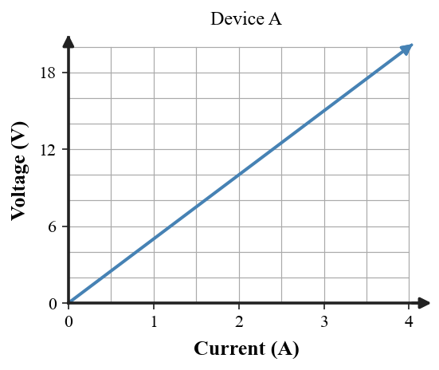

1. Define electrical resistance in terms of charge flow.
2. For wires of the same material and temperature, which has greater resistance: a longer wire or a shorter wire of the same thickness?
3. State Ohm’s Law.
4. At constant resistance, what happens to current when voltage increases?
5. At constant voltage, what happens to current when resistance increases?
6. A 15 V source is connected across a 5 Ω resistor. Calculate the current.
7. A resistor carries 2.5 A when the potential difference is 20 V. Calculate its resistance.
8. Use the graph to determine the resistance of Device A from the relationship between voltage and current, then explain whether the constant slope supports an ohmic model.

9. Two wires are made of the same material and have equal length. Wire A is thicker than Wire B. Predict which has lower resistance and greater current at the same voltage.
10. A 12 Ω resistor remains unchanged while source voltage rises from 6 V to 18 V. Compare the current before and after without treating voltage as a flowing substance.
11. A student says a steeper $V$-versus-$I$ graph means “current increases more easily.” Critique the statement by interpreting slope as resistance.
12. Two devices have different $V$–$I$ data. Device X forms a straight line through the origin; Device Y curves upward. Explain which better fits a constant-resistance model and what the changing slope suggests about Y.
13. Resistance is
14. Which wire change tends to lower resistance?
15. A 6 Ω resistor across 18 V carries
16. At constant resistance, tripling voltage causes current to
17. At constant voltage, doubling resistance causes current to
18. On a $V$-versus-$I$ graph for a constant resistor, the slope represents
19. Which data set best supports an ohmic device?
20. A device’s $V$–$I$ graph becomes steeper as current rises. Which interpretation is strongest?